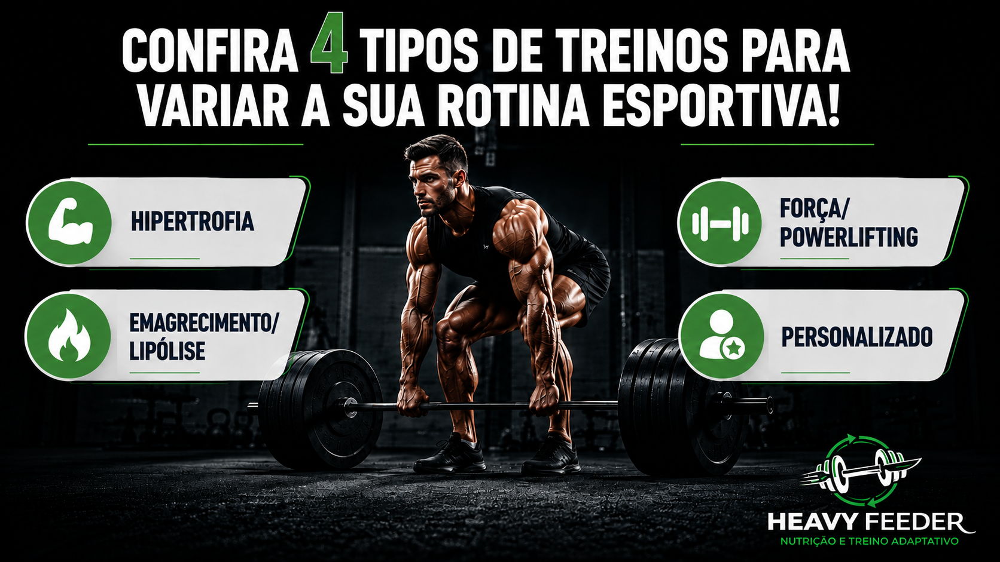

Descubra diferentes objetivos de treinamento e encontre uma rotina que combina com o que você deseja
alcançar. Nosso site apresenta, de forma simples e organizada, os principais tipos de treino, explicando
suas características, benefícios e metas.

Hipertrofia
Entenda como funciona o treinamento voltado ao aumento de massa muscular
e encontre planos com exercícios, séries e repetições para estimular o
crescimento dos músculos.
•Objetivo: aumentar o tamanho e o volume dos músculos.
•Foco: gerar estímulo suficiente para promover crescimento muscular.
•Características: volume de treino moderado/alto e cargas que permitam
executar o exercício com boa técnica.
•Indicado para: quem busca ganhar massa muscular e melhorar a estética corporal.
Clique na imagem acima para ser redirecionado à seção.
Emagrecimento/Lipólise
Encontre treinos que ajudam a aumentar o gasto energético e preservar
a massa muscular durante o processo de perda de gordura, combinando
musculação e condicionamento.
•Objetivo: reduzir a quantidade de gordura corporal.
•Foco: aumentar o gasto energético enquanto preserva a massa muscular.
•Características: musculação combinada, quando apropriado, com atividades
cardiovasculares e alimentação em déficit calórico.
•Indicado para: pessoas que querem mudar a proporção entre músculo e gordura.
Clique na imagem acima para ser redirecionado à seção.
Força/Powerlifting
Conheça estratégias voltadas para o aumento da força e desempenho nos exercícios, com planos
focados
em cargas, técnica e progressão.
•Objetivo: aumentar a capacidade de levantar, empurrar ou puxar cargas maiores.
•Foco: desenvolvimento da força máxima e eficiência dos movimentos.
•Características: cargas mais altas, geralmente com menos repetições
e maior descanso.
•Indicado para: quem quer ficar mais forte ou melhorar desempenho
em exercícios específicos.
Clique na imagem acima para ser redirecionado à seção.
Personalizado
O treino personalizado é elaborado de acordo com os objetivos, necessidades e características
de cada pessoa. Ele considera fatores como nível de experiência, disponibilidade,
preferências e objetivo principal,
permitindo uma rotina de exercícios mais adequada e eficiente.
•Objetivo: adaptar o treino às metas e necessidades individuais de cada pessoa.
•Foco: priorizar os objetivos específicos, como hipertrofia, emagrecimento, força ou
condicionamento.
•Características: exercícios, volume, intensidade e frequência ajustados de acordo com o
perfil e evolução do praticante.
Clique na imagem acima para ser redirecionado à seção.